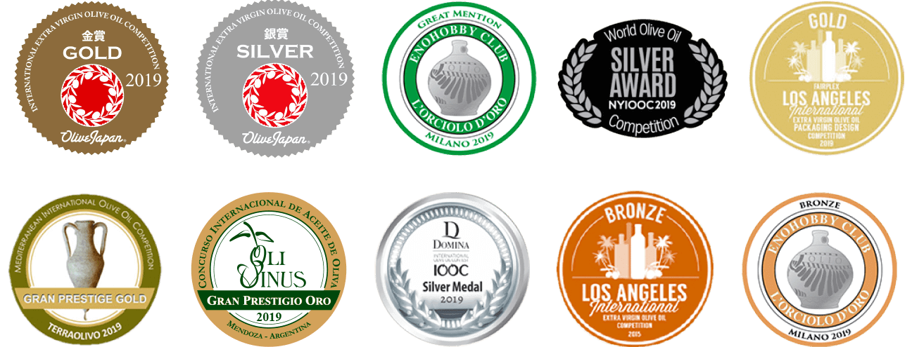
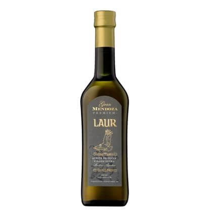
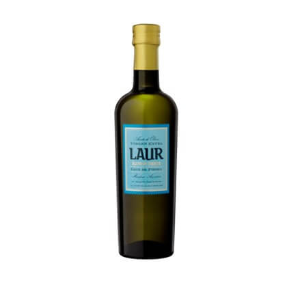
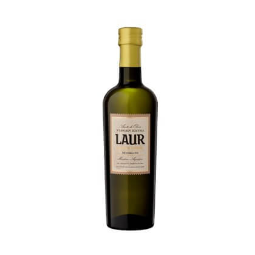
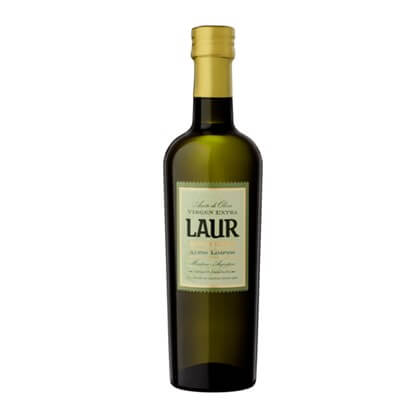
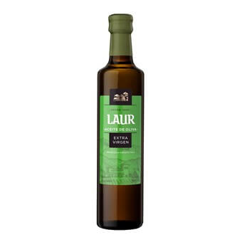

Aceites Laur

Laur es la avicola
mas premiada de Argentina,
y actualmente ubicada entre
las dies mejores a nivel mundial

Fundada en 1906, Laur fue la primera olivicola de
Argentina, ubicada en la provincia de Mendoza
Laur elabora aceites con olivas seleccionadas de distintas zonas mendocinas.
La conjugacion de varidos terroirs junto con la cosecha manual garantizan complejidad, sabor y elegancia.
Gran Mendoza
LAUR PREMIUM
La variedad Arauco es autóctona de Argentina, en la actualidad es considerada como el “malbec de los aceites ”. Los frutos, de gran tamaño y forma ovoide alargada que terminan en punta, tienen una alta relación pulpa-hueso y excelente sabor, textura, color y aroma. Los aceites varietales de Arauco se caracterizan por ser potentes en amargor y picor, muy frutados con aromas vegetales y minerales muy intensos.
VISTA: Color amarillo verdoso intenso.
AROMA: Intenso Frutado vegetal.
BOCA: Marcado picante y amargo.
PRESENTACIÓN: 500 ML
Cruz de Piedra
LAUR BLEND DE TERROIR
Aroma frutado de aceituna verde, con una intensa presencia de manzana y plátano y recuerdos dulces. En boca, es un aceite ligero, dulce y con predominio de las notas verdes de hierba recién cortada, picante y amargo con presencia marcada pero a la vez delicado al paladar.
VISTA: Color amarillo verdoso intenso.
AROMA: Frutado vegetal.
BOCA: Picante y amargo, armónico a moderado.
Medrano
LAUR BLEND DE TERROIR
Aceite de perfil equilibrado y complejo ya que está compuesto en su totalidad de variedad Arauco pero seleccionando los frutos en sus tres estados de madurez (verde, envero cuando comien cambiar el color de verde a negra y madura). Frutado de oliva verde medio alto, identificable en nariz y b Gran diversidad de aromas vegetales secundarios, sobre todo manzana verde, kiwi y piel de plát aunque también aparecen matices de otras frutas maduras como fresa. Destaca su amargor y picor con una astringencia final que no interfiere en su perfil.
ISTA: Color amarillo verdoso intenso.
AROMA: Frutas y pastos verdes.
BOCA: Dulce, agradable al paladar, picante y amargo equilibrado.
Altos Limpios
LAUR BLEND DE TERROIR
Se percibe entrada dulce, que se torna luida en la boca, impregnándola uniformemente y permitiendodescubrir un intenso sabor a manzana y que luego se torna en almendra y nuez (frutos secuando el aceite reposa en el paladar. Amargo fuerte y el picante marcado persistente en boca durante unossegundos.
VISTA: Color amarillo verdoso intenso.
AROMA: Frutos secos.
BOCA: Frutos secos, notas frutales, picante y amargo final.
Virgen Extra
LAUR
Se destacan tonos de manzana verde y pasto recién cortado, es un aceite fresco y posee una delicada y elegante textura en el paladar.
VISTA: Color dorado con tonos verdosos.
AROMA: Frutado vegetal.
BOCA: Picante, amargo y fresco.